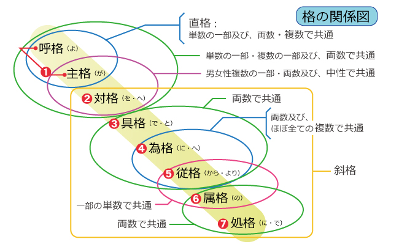

大歓喜トップ >> サンスクリット｜トップ >> 音読のための基礎文法 >> -āt
-āt〔-a語幹単数従格〕
具格と為格に続き、従格についても、単数の語尾を一つ挙げたいと思う。両数従格と複数従格については、既に代表的語尾を説明している。
nārāyaṇāt prāṇo jāyate | Nārāyaṇa Upaniṣad ／「ヴェーダテキスト1」サティヤ サイ出版協会 p.64
上記引用箇所の nārāyaṇāt が、単数従格の例である。
単数従格にも、重要な語尾が幾つかあって、-āt はその一つである。
他には、同じ-āt系統として、-smāt (-ṣmāt)、-at がある他、もう一つ-as (-aḥ)系統として、-as (-aḥ) 、-ās (-āḥ) 、-āyās (-āyāḥ) 、-syās (-syāḥ) 、-es (-eḥ) 、-os (-oḥ) 、-us (-uḥ) 、-nas (-naḥ /-ṇaḥ) がある。後者の-as (-aḥ)系統は、単数属格と共通形なのが、重要な特徴である。
その他に、格変化語尾とは扱われないが、従格に相当する意味を持つ接尾辞-tas (-taḥ)もあるので、念頭に置いておくとよいであろう。
-ātという語尾は、単数従格を表す。⇒『～から／より／をもとに／のせいで』
ここまでに紹介した格変化語尾のうち、具格・為格・従格を表にすると、下記のようになる。
| 単数 | 両数 | 複数 | |
|---|---|---|---|
| 具格 | -ena (-eṇa) | -bhyām | -bhis (-bhiḥ) |
| 為格 | -āya | -bhyas (-bhyaḥ) | |
| 従格 | -āt |
上記引用箇所の nārāyaṇāt は、nārāyaṇaの単数従格である。nārāyaṇa（ナーラーヤナ）は神の称号の一つで、ヴィシュヌ或いはクリシュナ、またはブラフマーとも同一視される。音を写して「那羅延」などとする。nara（人間）の父祖という意味上から、「人種神」「人生本」等の漢訳もされた。
続く prāṇo が主語で、「気」「呼吸」「生気・活気」を意味する。上記引用書では「生命原理」と訳されているが、一般的な意味から拡大して、宗教的に各学派で重要な意味を担う用語である。
jāyate が述語となる動詞であり、「生じる」「生まれる」「出現する」といった意味である。
従って引用箇所は、「ナーラーヤナからプラーナが生じる」という文法構造である。
nārāyaṇād brahmā jāyate | Nārāyaṇa Upaniṣad ／「ヴェーダテキスト1」サティヤ サイ出版協会 p.64
同じ文献の少し先の箇所で、今度は nārāyaṇād と最後が d, になっているが、同じ単語の同じ変化形である。先ほどは、直後の単語が prāṇo と無声音の p, で始まっていたが、今度は、 brahmā が有声音の b, で始まっている。そのせいで、直前の t, が、対応する有声音の d, に交替するのである。
構文は先ほどと全く同じで、「ナーラーヤナからブラフマーが生じる」となっている。
この文献には、他にも何度か、 nārāyaṇāt や nārāyaṇād が現れるが、同じように「ナーラーヤナから」の意味である。
なおこの語尾は、これらの音の他にも、続く単語の音の影響により、-āc,-āj,-āṭ,-āḍ,-āl,-ān などの音に変化する場合がある。
同様の構文のある、別の文献を見てみよう。
prāṇādvāyurajāyata | Puruṣa Sūktam ／「ヴェーダテキスト1」サティヤ サイ出版協会 p.89
この引用箇所では、prāṇādが、単数従格である。最初の引用箇所では prāṇo と単数主格であったが、ここでは従格になっている。
構文は、述語動詞が過去形になっている以外、先の2箇所と変わらない。vāyur というのは、風神ヴァーユ（vāyu）の単数主格形・vāyus が、次に母音で始まる単語があるために変形しているのである。述語動詞は、ajāyata。「プラーナからヴァーユが生じた。」
なお、vāyu も本来、「風」「空気」の意味であり、定義によっては、prāṇa は vāyu の一種ということになってしまう。
Q. -āt-や-ād-などがあって、単数従格でない例はありますか？
A. はい。比較的短い音ですので、他のより長い語尾（-yāt,-yātām,など）の一部とも合致しますし、他の単語の一部にあることもあります。āt, そのものが独立した副詞として使われることもあります。
Q. ところで、格って結局、何でしたっけ？
A. サンスクリットの名詞や形容詞は、幾つかの条件によって単語の形が変化します。その変化の仕方を分析したときに、その単語と他の単語の意味関係によって変化する側面があります。その側面から、名詞や形容詞の形の変化の仕方をまとめたものが、格です。格による語形の変化を、格変化と言います。代名詞・数詞、そして動詞の分詞のうち形容詞的な分詞にも、格変化があります。
サンスクリットの格は主に、単語の末尾の形、語尾で表現されます。その点、日本語の格の表現と少し似ています。日本語の格は、単語の後ろに付く格助詞で表されています。「が・の・を・に・へ・から・より・で」などです。しかし、サンスクリットの格変化語尾は、日本語の格助詞と、幾つか違う特徴があります。
(1).日本語の格助詞は、もっぱら“格だけ”を表しています。しかし、サンスクリットの格変化語尾は、他のことも同時に表します。それが幾つあるかという「数」、それから、文法上の「性」と呼ばれるグループのどれに属するかなどです。そして「数」や「性」が違うと、同じ格でも全然違う形をとることが普通に見られます。
(2).その一方で、サンスクリットの格変化語尾は、異なる「数・格」で共通の形をとるものがあります。サンスクリットの格は、8種類あります。しかし、それが全部違う形を取るのは単数形に限った話で、それも全てのタイプの単語ではありません。両数形では、格による語形変化は3つの語形しか区別されません。
(3).日本語の格助詞はどれも、基本的にどんな名詞・代名詞にも使うことができます。しかし、サンスクリットの名詞・形容詞・代名詞等は、主に語幹の末尾によって、数多くの格変化タイプに分かれ、どのタイプかによって、使われる格変化語尾も変わります。
つまり、日本語と比べると、サンスクリットは、格の表示機能が分離・整頓されておらず、他の文法機能の標識と渾然一体になっているということです。そして、困ったことに、日本語の格助詞とは、機能の範囲がきれいに対応してくれていません。

（最終更新2013.9.16）
大歓喜トップ >> サンスクリット｜トップ >> 音読のための基礎文法 >> -āt